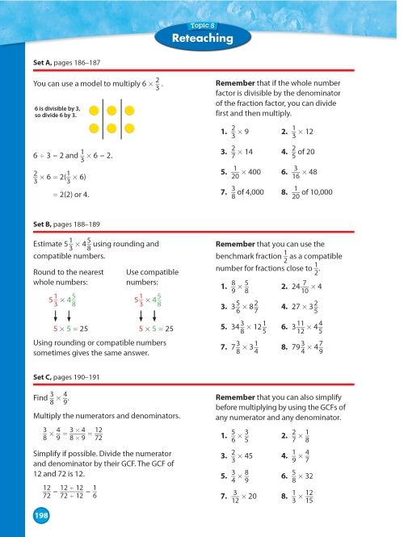

NIMAS: Excessive Images in Mid-level Mathematics BooksNIMAS: Excessive Images in Mid-level Mathematics Books
NIMAS: Excessive Images in Mid-level Mathematics BooksNIMAS: Excessive Images in Mid-level Mathematics BooksDAISY 3 Structure Guidelines
Last Revised: June 4, 2008
This page is initially intended for discussion. This section will be expanded as resolution is reached. The information provided here is specific to books produced to the NIMAS Standard; it does not apply to books produced to the DAISY Standard.
The DAISY MathML Modular Extension Mathematics was approved February 23, 2007. Producers creating DAISY/NISO, that is, DAISY 3 books which contain mathematical notations should incorporate the DAISY MathML Extension into their production processes.
See the DAISY Specification for MathML. See also the section in the Part II(g): Mathematics in these Guidelines.
The current NIMAS recommendation is for all mathematical content to be inserted into the document as an image. While this may be appropriate for titles with an average number of mathematical objects, many mid-level mathematics textbooks are filled with mathematical objects, with an average of 25+ equations per page. An example, and the marked-up text as required by the NIMAS Standard are given below.
Page Sample:

Page 198 from Envision Math (0-328-27285-X) by Scott Foresman Addison Wesley
Sample Code:
<level1>
<pagenum id="IDAJAKP">198</pagenum>
<h1>Set A pages 186-187</h1>
<p> You can use a model to multiply
<imggroup>
<img src="images/p198-001.png" alt="Fraction" width="36"
height="30"/>
</imggroup>.</p>
<p>6 is divisible by 3, so divide 6 by 3.</p>
<imggroup>
<img src="images/p198-002.png" alt="Counters" width="90"
height="78"/>
</imggroup>
<list type="ul">
<li>6 ÷ 3 = and <img src="images/p198-003.png" alt="Equation"
width="56" height="32"/>.</li>
<li><img src="images/p198-004.png" alt="Equation" width="93"
height="36" /></li>
<li>= 2(2) or 4.</li>
</list>
<p><strong>Remember</strong> that if the whole number factor is
divisible by the denominator of the fraction factor, you can
divide first and then multiply.</p>
<list type="pl">
<li>1. <img src="images/p198-005.png" alt="Equation"
width="34" height="30"/></li>
<li>2. <img src="images/p198-006.png" alt="Equation"
width="41" height="30"/></li>
<li>3. <img src="images/p198-007.png" alt="Equation"
width="42" height="31"/></li>
<li>4. <img src="images/p198-008.png" alt="Equation"
width="42" height="33"/></li>
<li>5. <img src="images/p198-009.png" alt="Equation"
width="53" height="29"/></li>
<li>6. <img src="images/p198-010.png" alt="Equation"
width="46" height="30"/></li>
<li>7. <img src="images/p198-011.png" alt="Equation"
width="59" height="31"/></li>
<li>8. <img src="images/p198-012.png" alt="Equation"
width="69" height="30"/></li>
</list>
</level1>
<level1>
<h1>Set B, pages 188-189</h1>
<p>Estimate <img src="images/p198-013.png" alt="Equation"
width="52" height="35"/> using rounding and compatible
numbers.</p>
<p>Round to the nearest whole numbers:</p>
<imggroup>
<img src="images/p198-014.png" alt="Rounding whole numbers"
width="69" height="72"/>
</imggroup>
<p>Use compatible numbers:</p>
<imggroup>
<img src="images/p198-015.png" alt="Rounding compatible
numbers" width="83" height="78"/>
</imggroup>
<p>Using rounding or compatible numbers sometimes gives the
same answer.</p>
<p><strong>Remember</strong> that you can use the benchmark
fraction <img src="images/p198-016.png" alt="Fraction"
width="17" height="26"/> as a compatiblenumber for
fractions close to <img src="images/p198-017.png"
alt="Fraction" width="17" height="27"/>.</p>
<list type="pl">
<li>1. <img src="images/p198-018.png" alt="Equation"
width="36" height="30"/></li>
<li>2. <img src="images/p198-019.png" alt="Equation"
width="56" height="32"/></li>
<li>3. <img src="images/p198-020.png" alt="Equation"
width="54" height="29"/></li>
<li>4. <img src="images/p198-021.png" alt="Equation"
width="52" height="30"/></li>
<li>5. <img src="images/p198-022.png" alt="Equation"
width="64" height="30"/></li>
<li>6. <img src="images/p198-023.png" alt="Equation"
width="56" height="30"/></li>
<li>7. <img src="images/p198-024.png" alt="Equation"
width="51" height="30"/></li>
<li>8. <img src="images/p198-025.png" alt="Equation"
width="59" height="31"/></li>
</list>
</level1>
<level1>
<h1>Set C, pages 190-191</h1>
<p> Find <img src="images/p198-026.png" alt="Equation"
width="43" height="34"/>.</p>
<p>Multiply the numerators and denominators.</p>
<imggroup>
<img src="images/p198-027.png" alt="Equation" width="102"
height="34"/>
</imggroup>
<p>Simplify if possible. Divide the numerator and denominator
by their GCF. The GCF of 12 and 72 is 12.</p>
<imggroup>
<img src="images/p198-028.png" alt="Equation" width="92"
height="35"/>
</imggroup>
<p><strong>Remember</strong> that you can also simplify before
multiplying by using the GCFs of any numerator and any
denominator.</p>
<list type="pl">
<li>1. <img src="images/p198-029.png" alt="Equation"
width="36" height="32"/></li>
<li>2. <img src="images/p198-030.png" alt="Equation"
width="39" height="33"/></li>
<li>3. <img src="images/p198-031.png" alt="Equation"
width="42" height="31"/></li>
<li>4. <img src="images/p198-032.png" alt="Equation"
width="36" height="31"/></li>
<li>5. <img src="images/p198-033.png" alt="Equation"
width="37" height="31"/></li>
<li>6. <img src="images/p198-034.png" alt="Equation"
width="42" height="31"/></li>
<li>7. <img src="images/p198-035.png" alt="Equation"
width="47" height="30"/></li>
<li>8. <img src="images/p198-036.png" alt="Equation"
width="45" height="36"/></li>
</list>
</level1>
, officially, the ANSI/NISO Z39.86 Specifications for the Digital Talking Book
Copyright © The DAISY Consortium, Some Rights Reserved.
Creative Commons License: No Derivative Works